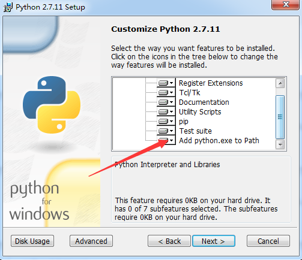

ETENG-WIKI构建说明
发布方式
- 利用MKDocs 在github 发布
快速开始,贡献一个wiki
安装
- 安装python点击下载2.7 MkDocs 支持 Python 2.6, 2.7, 3.3, 3.4,3.5 现在最好先用2.7 
$ python --version
Python 2.7.2
$ pip --version
pip 1.5.2
- 用pip安装mkdocs:
pip install mkdocs
$ mkdocs --version
mkdocs, version 0.15.2
贡献给一个wiki
首先加入 易腾知识库 这个组织 ,联系我们
例如我贡献ETENG-WIKI这个项目
git clone https://github.com/ETENG-WIKI/ETENG-WIKI.git
cd ETENG-WIKI
mkdocs serve
在浏览器中 Running at: http://127.0.0.1:8000/ 就可看到现在的效果
增加一页 在docs 中新建***.md
mkdocs.yml 增加配置指向
在***.md 中编写即可
发布
- 通过mkdocs github发布
mkdocs gh-deploy --clean
MKDocs 配置
Project layout
mkdocs.yml # The configuration file.
docs/
index.md # The documentation homepage.
... # Other markdown pages, images and other files.
通过mkdocs.yml配置标题,主题和目录结构
site_name: 易腾WIKI列表
pages:
- Home: index.md
- About: about-wiki.md
- Start: start.md
- Contact: contact.md
theme: readthedocs
MkDocs doc
For full documentation visit mkdocs.org.
待续.......... 累了